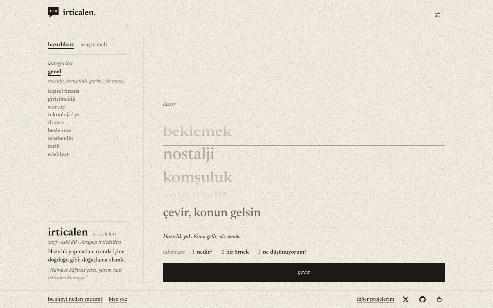
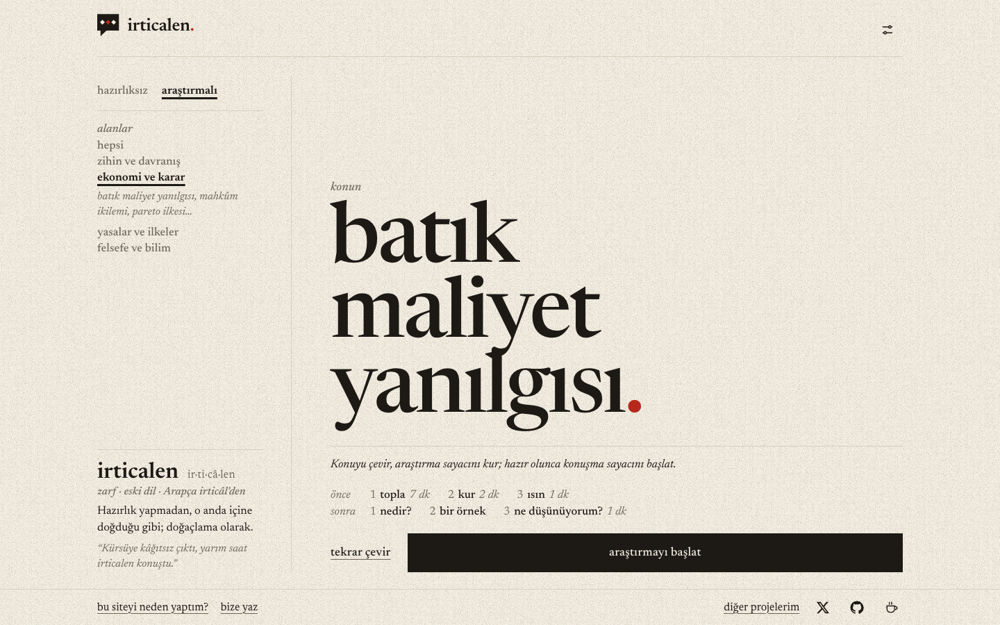
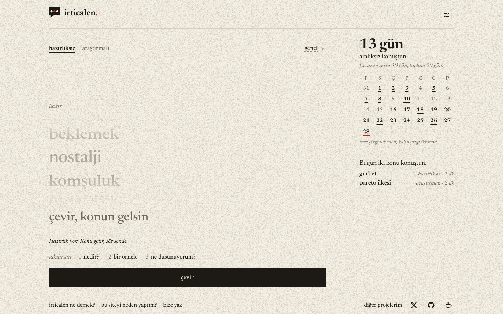
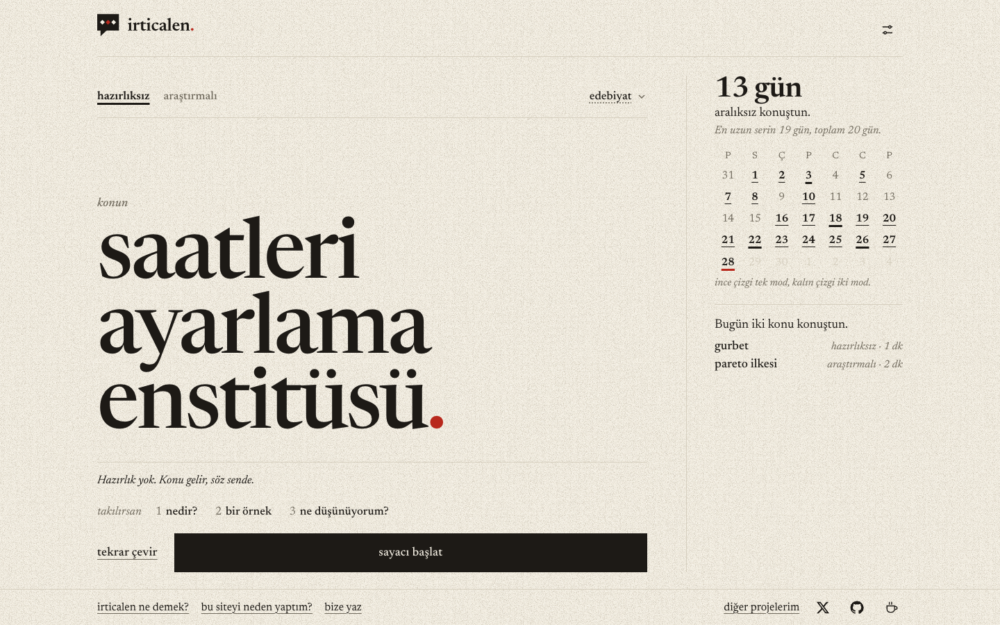
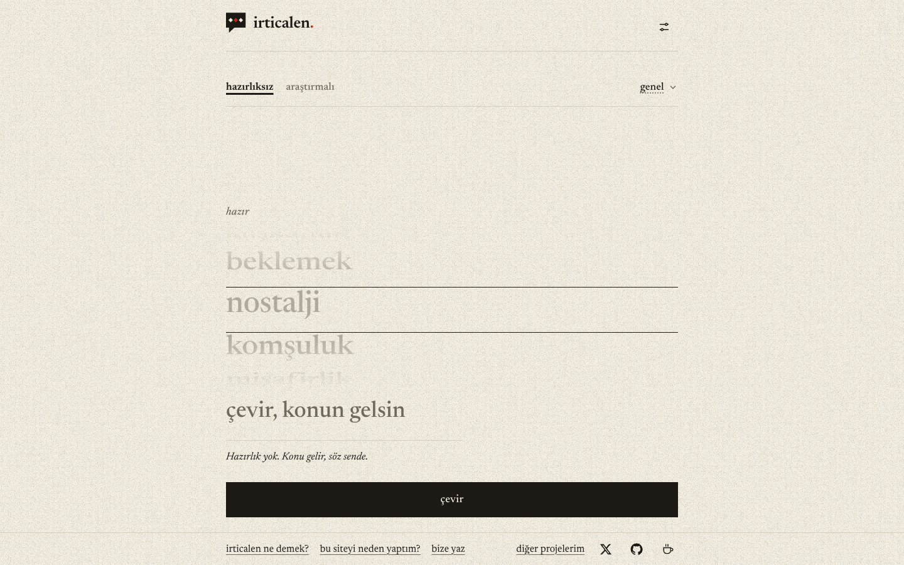
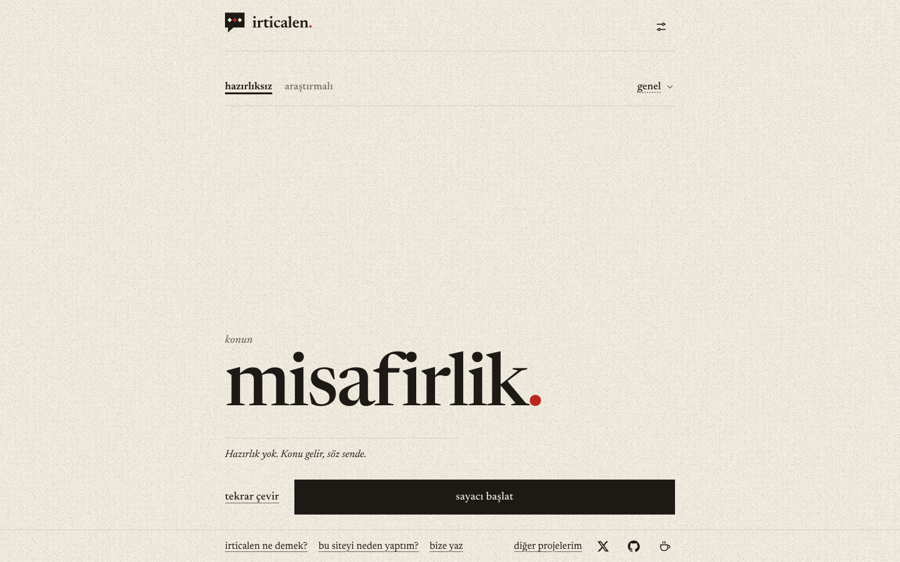
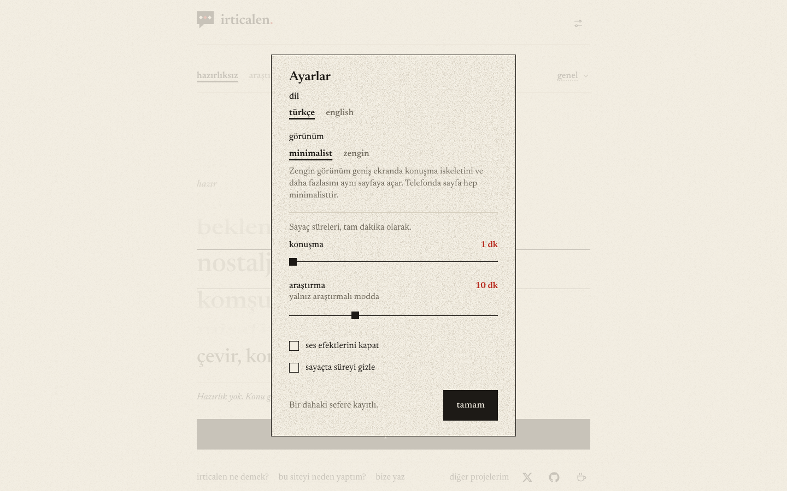

Masaüstü taslakları
1440×900 ekran görüntüleri. Resme tıklayınca canlı taslak açılır (durum adresteki ?s= ile değişir). Açıklama: README.md.
Zengin görünüm A — açık kitap


Zengin görünüm B — çalışma defteri


Minimalist (dil ayarlara taşındı) ve ayarlar


